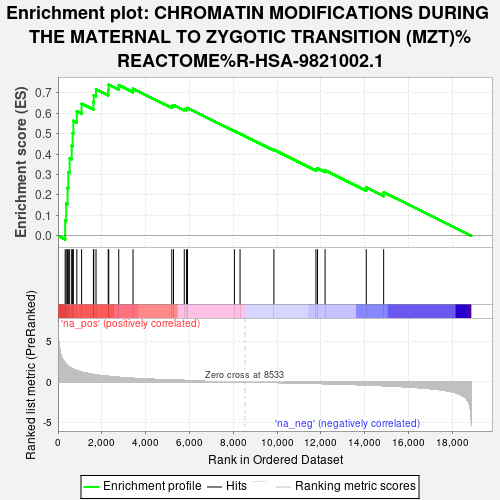
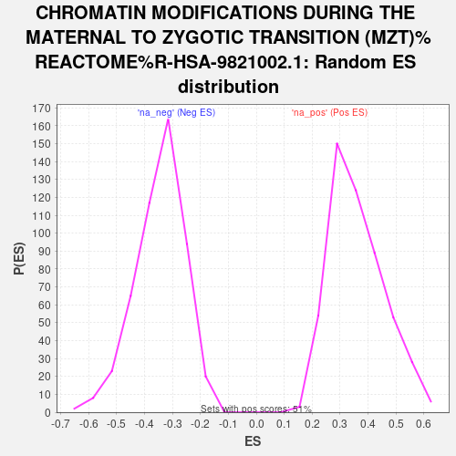

| | | Dataset | GFPPositive_GFPNegative |
| Phenotype | NoPhenotypeAvailable |
| Upregulated in class | na_pos |
| GeneSet | CHROMATIN MODIFICATIONS DURING THE MATERNAL TO ZYGOTIC TRANSITION (MZT)%REACTOME%R-HSA-9821002.1 |
| Enrichment Score (ES) | 0.73926747 |
| Normalized Enrichment Score (NES) | 2.0457284 |
| Nominal p-value | 0.0 |
| FDR q-value | 0.030214727 |
| FWER p-Value | 0.053 |
Table: GSEA Results Summary

Fig 1: Enrichment plot: CHROMATIN MODIFICATIONS DURING THE MATERNAL TO ZYGOTIC TRANSITION (MZT)%REACTOME%R-HSA-9821002.1
Profile of the Running ES Score & Positions of GeneSet Members on the Rank Ordered List

Fig 2: CHROMATIN MODIFICATIONS DURING THE MATERNAL TO ZYGOTIC TRANSITION (MZT)%REACTOME%R-HSA-9821002.1: Random ES distribution
Gene set null distribution of ES for CHROMATIN MODIFICATIONS DURING THE MATERNAL TO ZYGOTIC TRANSITION (MZT)%REACTOME%R-HSA-9821002.1